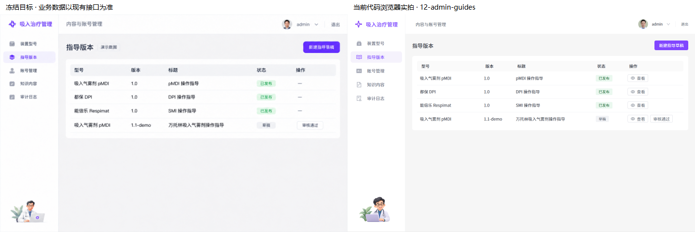
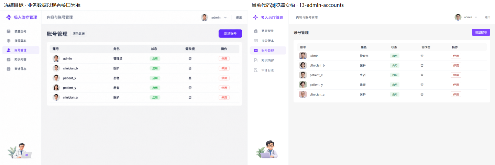
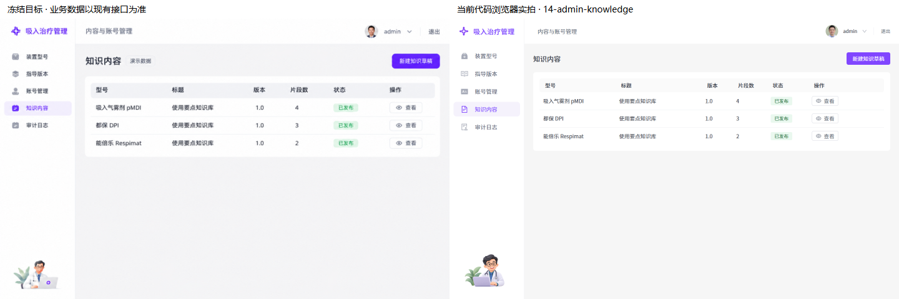
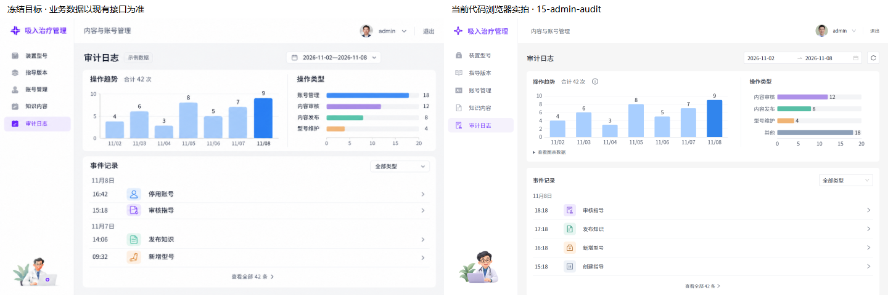

12指导版本 · 13账号管理 · 14知识内容 · 15审计日志。00–11批准版保留。
左冻结目标，右浏览器实拍。审计按真实接口展示“其他”类别，不编造账号操作；图表只在区间数据完整时显示。
完整实拍 · 真实后端只读实拍 · 390手机 · 1280桌面




读取不完整 · 安全详情 · 手机3000条 · 长日期区间 · 无照片回退 · 短屏弹窗
主图使用隔离演示接口。真实后端只读检查，未提交业务变更。临时密码未进入截图、日志或存储。